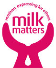

Milk Matters

Milk Matters is a non-profit breastmilk bank located in Cape Town, that works alongside mothers to operate on a community-based donation system.
Milk Matters was founded in 2003 with the mission to pasteurise and distribute donations of screened breast milk from healthy donors to premature, ill and vulnerable babies.
They provide an essential service as breastmilk has the potential to save premature babies' lives, as it offers the nutrition and protection essential for their survival.
As the organisation grows, their vision of contributing to the health and well-being of babies and mothers expands. They are always looking for new ways to support their donors.
The latest attempt to expand was our project to create a mobile application for their donors to use.
Project
This project was a continuation of a UCT Honours project in 2016 done by Chelsea Wardle and Mitchel Green with Dr. Melissa Densmore as their supervisor. They created a Android application through a process of co-design with donor mothers from Milk Matters. Our project's goal was to increase the overall donor experience revamping this application. This was done by giving Milk Matters control over the content, making it cross-platform, and adding desired functionality highlighted by our own User Centric Design methods. The project resulted in a donor mobile application, available on iOS and Android, a web application used by Milk Matters to provide dynamic content to the donor app, and a back-end that provides database and authentication functionality to both applications.